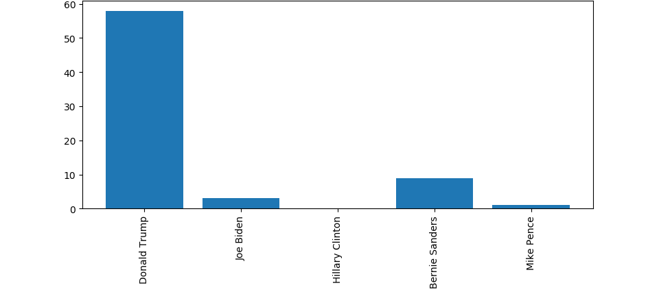
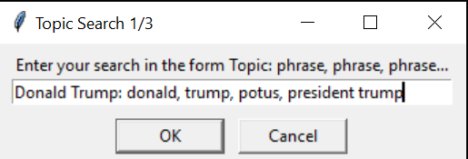

Reddit Search Tool
The Reddit search tool is a program that I created in python using praw and matplotlib that can search live submissions in a subreddit for keywords and key phrases for a given period of time. The program will then create a custom graph depending on what topics the user entered.
USAGE
The necessary modules to have installed are matplotlib and praw
pip install praw
pip install matplotlib
IMPORTANT** to use this program you must eddit the client_id, username, and password fields to your corresponding reddit application account details
- The program will prompt how many general topics you want to search for. These are ultimately the final graph's x-axis
- The program will prompt what subreddit to search in, do not include the /r/, for example, (politics)
- The program will prompt for the number of minutes to search for
- The program will prompt for the topic and keywords/key phrases to look for in comments, here is an example of a correct input 
While the program is running, your terminal will output information such as the exact number of of occurences of each topic as well as the total number of comments submitted/read by the program which may be useful for statistical analysis regarding the subreddit's content as a whole.
 Finally, the program will generate a custom graph as the one seen above using matplotlib to display your data
Finally, the program will generate a custom graph as the one seen above using matplotlib to display your data
Find this project on github to use it or make contributions!